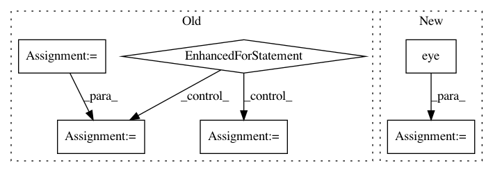

f47485cc4a21fb18564ede7ab0cc9001dbd0f1d9,chaospy/descriptives/sensitivity/total.py,,Sens_t,#,9
Before Change
dim = len(dist)
poly = setdim(poly, dim)
zero = [1]*dim
out = numpy.zeros((dim,) + poly.shape, dtype=float)
V = Var(poly, dist, **kws)
for i in range(dim):
zero[i] = 0
out[i] = ((V-Var(E_cond(poly, zero, dist, **kws), dist, **kws)) /
(V+(V == 0))**(V!=0))
zero[i] = 1
return out
After Change
return out
out[:] = variance
for idx, unit_vec in enumerate(numpy.eye(dim, dtype=int)):
conditional = E_cond(poly, 1-unit_vec, dist, **kws)
out[idx] -= Var(conditional, dist, **kws)
out[idx] /= variance
return out
In pattern: SUPERPATTERN
Frequency: 3
Non-data size: 6
Instances
Project Name: jonathf/chaospy
Commit Name: f47485cc4a21fb18564ede7ab0cc9001dbd0f1d9
Time: 2020-06-10
Author: jonathf@gmail.com
File Name: chaospy/descriptives/sensitivity/total.py
Class Name:
Method Name: Sens_t
Project Name: jonathf/chaospy
Commit Name: f47485cc4a21fb18564ede7ab0cc9001dbd0f1d9
Time: 2020-06-10
Author: jonathf@gmail.com
File Name: chaospy/descriptives/sensitivity/main.py
Class Name:
Method Name: Sens_m
Project Name: mittagessen/kraken
Commit Name: 6e6c12425a787d8c954ce5c31ceed59cdd531001
Time: 2018-05-20
Author: mittagessen@l.unchti.me
File Name: kraken/lib/ctc_decoder.py
Class Name:
Method Name: greedy_decoder
Project Name: jonathf/chaospy
Commit Name: f47485cc4a21fb18564ede7ab0cc9001dbd0f1d9
Time: 2020-06-10
Author: jonathf@gmail.com
File Name: chaospy/descriptives/sensitivity/total.py
Class Name:
Method Name: Sens_t